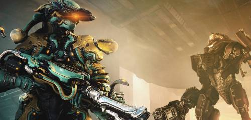

Events
Events that have recently occurred within Warframe will be put up here.
Current Events
Octavia Prime was released with new Prime weapons, the Tenora Prime and Pandero Prime, and is the newest Warframe to receive a primed variant.
While not entirely within the game, when the developers of Warframe update the community on current events, they will often livestream the conversation on Twitch
Past Events
A contest where player's submitted valentine's day cards for a chance to win premium rewards within the game.
A small Valentine's Day event that allowed player's to earn limited time cosmetics for use in-game by doing standard missions within the Orb Vallis.
Nezha Prime is currently the unvaulted item in prime access, allowing others to unlock him through relics for a limited time before his relics are non-obtainable again.

A limited time event where player's were asked to play through standard missions with the recently introduced Nechramechs
Upcoming Events
Railjack 3.0 is meant to be an overhaul to the current Railjack system we currently have, the main addition being that progress made on personal railjacks will be transferrable to other crews, allowing the feeling of progress to be kept even if you aren't hosting the mission.

Update 30 is meant to be the next large-scale update to Warframe, including the new Warframe Sevagoth and his questline.